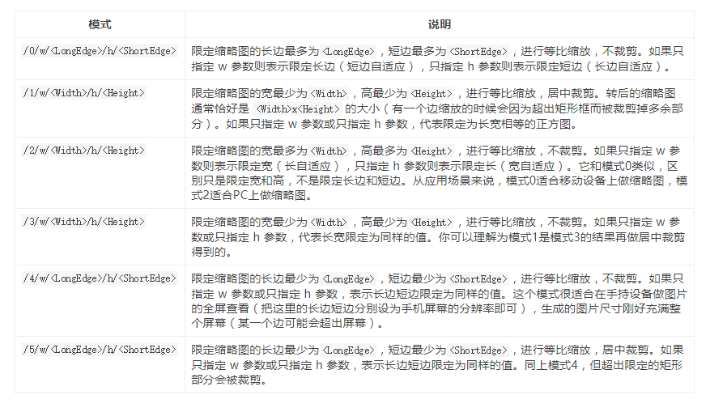

imageView2接口可支持处理的原图片格式有psd、jpeg、png、gif、webp、tiff、bmp。
注意： 1. 可以仅指定w参数或h参数； 2. 新图的宽/高/长边/短边，不会比原图大，即本接口总是缩小图片； 3. 所有模式都可以只指定w参数或只指定h参数，并获得合理结果。在w、h为限定最大值时，未指定某参数等价于将该 参数设置为无穷大（自适应）；在w、h为限定最小值时，未指定参数等于给定的参数，也就限定的矩形是正方形; 4. 处理后的图片单边最长不得超过9999，宽和高的乘积最大不得超过25000000； 5. 处理前的图片w和h参数不能超过3万像素，总像素不能超过1亿5000万像素。
ej:http://developer.qiniu.com/resource/gogopher.jpg?imageView2/1/w/200/h/200